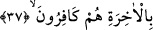

Beden de ruhun gıdalanması için uygun düşen sâlih amelleri ruha hazırlayan yemekçi
başıdır.
Ruh, ancak bâkî kalacak olan rûhânî gıdalarla bâkî kalabilir. Nitekim cisim de ancak
cismânî gıdalarla bâkî kalabilir. Nefis ile bedenin şerîat zindanında hapsedilmeleri de
sırf ruh kralının yiyecek ve içeceğine zehir katarak onu helâk etme suçuyla itham edilmiş
olmalarından kaynaklanmıştır. Bu zehir, hevâ ve mâsıyet zehridir. Dolayısıyla nefis ve
beden şerîat zindanında hapsedilince ruh kralı onların şerlerinden emin olmuş olur.
Nefis de beden de dünyaya âid varlıklardır. Dünya ehli ise uykudadırlar, öldükleri
vakit uyanırlar. Dünya ehlinin yaptığı bütün ameller, uyuyan birinin gördüğü rüyâlar
mesâbesindedir. Ölmek suretiyle uyandıkları zaman bu rüyaların âhirette zuhûr edecek
yorumları olacaktır.
Kalb Yûsuf’u ise dünya ehlinin makâmlarının yorumunu bilir. Çünkü o
muhsinlerdendi. Yâni Mevlâları’nın katında hazır bulunan kalblerle, Rablerine bakıp
parıldayan yüzlerle Allah’a rü’yet ve müşâhede üzere ibâdet edenlerdendir.
İşte onlar bu hazretten sâdır olan her hükmü gayb âlemine inmezden önceki hallerinde
olduğu gibi müşâhede ederler. Bu hükümlerin gayb âlemine geçişi sırasında, muhayyile
kuvvesi onlara mânâlarına uygun kisveler giydirir.
İşte rüyâ sâhibi, eğer hayallerin dilinden anlayanlardansa onu tâbir eder. Hayal lisanı
ile tercüme edip de ilâhî hazretten sâdır olan hükmü ona haber vererek kendisine
tercüman olması için rüyâ tâbir eden bir kimseye arz etmez. Bu sebeple sâlih rüya
peygamberliğin bir parçası olmuştur. Rüyâ tâbiri de aynı şekilde peygamberlikten bir
parçadır. Çünkü o Allah Teâlâ’nın dilediği kullarına öğrettiği ledünnî bir ilimdir.
37. (Yûsuf) şöyle dedi: “Size rızık olarak verilen yemek gelmeden önce onun
yorumunu mutlaka size haber vereceğim. Bu, Rabbimin bana öğrettiklerindendir.
Şüphesiz ben, Allah’a inanmayan, âhireti de inkâr eden bir kavmin dinini terk
ettim.
Yûsuf “şöyle dedi: “Size rızık olarak verilen yemek” yani âdetinize uygun olarak
burada yediğiniz yemek “gelmeden önce” yani henüz size ulaşmadan önce “onun
yorumunu mutlaka size haber vereceğim.” Yani, hiçbir durumda size yemek gelmez.
Ancak ben size o yemeğin ne tür olduğunu, miktarını, rengini, tadını ve diğer
özelliklerini bildirdiğimde gelir.
Böyle bir bildirme fiiline ‘yorum’ denmesi ise istiâre yoluyladır. Çünkü bilinmeyen
bir yemeğin haber verilmesi, tıpkı uykuda görülen rüyânın yorumlanması